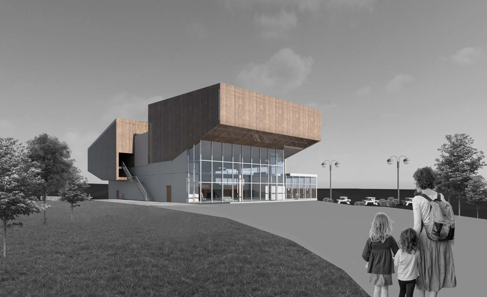

culture & legacy
graduation project
Vaux +

Designed as an events venue for the 2021 City of Culture and a community centre post-2021, my intervention responds to the physical, historical and social aspects of Sunderland and the immediate site. This roots the building into its cultural context and collective identity of the area, aiming to recreate a sense of pride in residents and attract visitors.

The brewing process runs vertically down the building, reflecting the verticality of the site on a 20m cliff. Strategically placed voids allow people to view the entire process of brewing as they make their way around the building.
The building incorporates temporary and permanent spaces, which change between day/ night, seasonally and after the City of Culture year. Vaux + was designed as a ‘loose container in which the function of the architecture [is] to act as a catalyst for events’.

As a new landmark for Sunderland, a sustainable, energy efficient design was crucial in promoting the city’s forward-thinking values. Located on a unique site offering numerous methods of renewable energy generation, the building challenges the negative reputation of brewing as a wasteful process by offering a carbon-neutral approach.